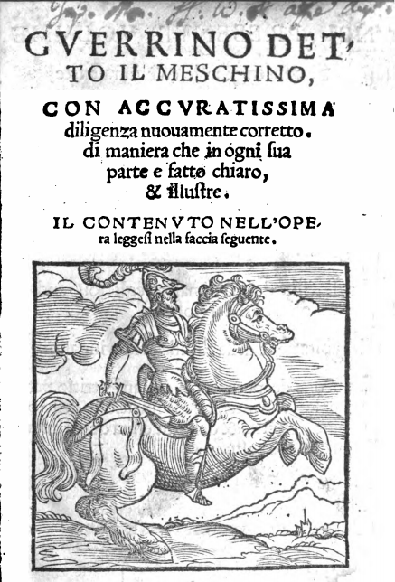
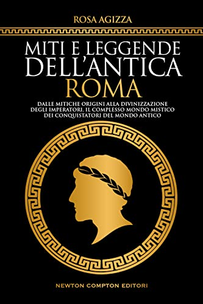

Letture Consigliate

Questa comunità è elitista
Nobiltà, cavalleria, elitistmo, aristocrazia.
Non è solamente hiking
Lasciati andare, non spaventarti, luce e tenebra sono complementari!

Il vento bisbiglia parole e sentenze,
è la voce degli dei!
La sibilla appenninica
Tu che i monti abiti, esiliata da Dio. Guida i nostri passi.
Last updated 3 mins ago
Ancora un gol!

Provvisoriamente previsto per maggio 2023, Angular 16 esplorerà l'idratazione e i miglioramenti dell'usabilità del rendering lato server, con un primo passo costituito dall'idratazione non distruttiva. Questa tecnica consentirebbe il riutilizzo del DOM lato server e, anziché eseguire nuovamente il rendering, collegherebbe solo listener di eventi e creerebbe strutture di dati necessarie al runtime di Angular.
.NET Core 3.1 di Microsoft si avvicina alla fine

.NET Core 3.1 di Microsoft, una versione del framework di sviluppo software multipiattaforma open source di Microsoft pubblicato a dicembre 2019, non sarà più supportato a partire dal 13 dicembre 2022. .NET Core 3.1 raggiunge lo stato di fine supporto quel giorno, con Microsoft che interrompe la manutenzione degli aggiornamenti e del supporto tecnico, ha affermato la società.

Apple , alternativa dell'App Store in arrivo ?
Predicando il mantra che "il web è per tutti", Mozilla ha pubblicato una visione per l'evoluzione del web che sottolinea l'apertura e la sicurezza, con l'azienda che mira a colmare le carenze in aree tra cui privacy e complessità. Il documento di visione copre ciò che Mozilla vorrebbe vedere accadere e delinea il lavoro necessario per raggiungere questi obiettivi. Pur affermando che il Web è diventato la piattaforma di comunicazione più importante del mondo, il CTO di FireFox di Mozilla Eric Rescoria e il Distinguished Engineer Bobby Holley hanno scritto che il Web ha problemi reali, con persone spiate, prive di potere e gravate da esperienze lente ed eccessivamente complesse.
Perché Wasm è il futuro del cloud computing
Sia sul server che sull'edge, Wasm ti consente di creare una logica personalizzata che funziona molto più vicino ai dati di quanto potesse fare prima. E puoi farlo in modo sicuro, efficiente e con maggiore flessibilità.Wasm potrebbe essere solo la tecnologia emergente più importante di cui non hai mai sentito parlare. Ok, forse ne hai sentito parlare. È importante! Abbreviazione del linguaggio WebAssembly , Wasm è stato sviluppato per il web. Tuttavia, la tecnologia Wasm si è espansa oltre il browser web. Ora le organizzazioni stanno iniziando a eseguire Wasm sul lato server. Ad esempio, la mia azienda, SingleStore, lo sta utilizzando nel nostro database.